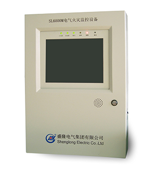
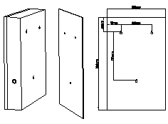
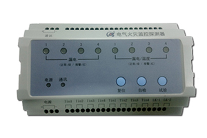
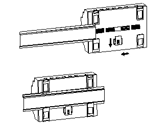
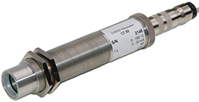
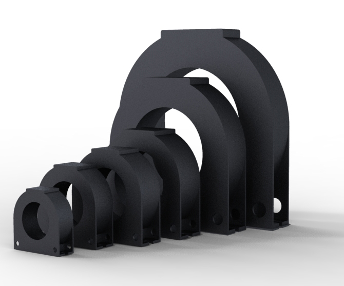
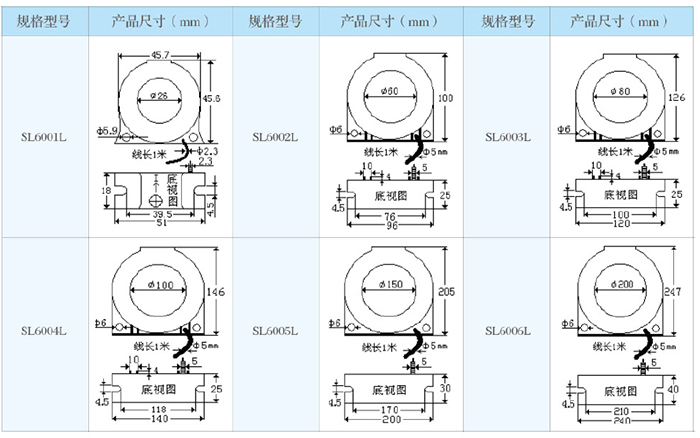

SL60系列电气火灾监控设备
产品简介
SL60电气火灾监控设备是根据中国国家标准GB14287.1-2005 、GB13955-2005和国际电工标准IEC62020、IEC60755，研究开发的专门用于TN与TT配电系统的电气火灾监控设备。该设备基于中小型电气火灾监控系统而设计，壁挂式易于安装。LIUNX操作系统平台，安全可靠，全中文触摸式人机交互界面，易于操控。通过高效的CAN现场总线，基于安全可靠的工业标准MODBUS-RTU协议与终端电气火灾监控探测器连接，组成电气火灾监控系统。
产品特点
l基于高速的嵌入式32位平台的LIUNX系统，处理迅速，运行稳定
l2路CAN通信回路，最大接入220个终端探测器，适用于中型电气火灾监控系统
l剩余电流和温度报警 可通过监控设置对每个终端设备进行参数设置
l自身的检测功能 对主备电进行智能管理
l数据存储和查询功能 对报警和事件信息进行时间戳存储，海量存储快速查询
l多个用户管理 可设置最高管理权限和操作员权限
l实时数据采集每个终端的所有数据状态
l友好的人机交互界面 10.4寸进口屏幕 触摸输入
外形尺寸
安装方式：壁挂安装
外观尺寸： 380mm×550mm×140mm
功能特性
报警功能：接收报警信息发出声、光报警，指示出报警部位的报警数值和报警时间
故障功能：监测出故障的部位并发出声、光信号
控制输出：能对带有输出功能的探测器进行脱扣控制
数据存储：对报警、操作数据进行存储
记录查询：有条件的查询报警和操作历史记录
参数设置：对远程的监控探测器设置参数
用户管理：对特权用户进行增、删、查、改
电源管理：监控设备具有双电源能力，主电源优先
自检功能：对本系统声光报警器件进行监测（判断器件是否损坏）
实时采集：实时的采集每一个回路的数值
状态显示：实时的显示每一个回路的状态
输入功能：10.4寸触摸式输入，灵活操作
性能指示
执行标准：GB 14287.1-2005
主电源输入范围：AC:85~265VDC:80-300V
备用电源：主电源欠压或者停电时启用，维护工作时间> 4h。
整机功耗：< 20W
输入频率：频率45-65Hz
过载能力：电压、电流1.2倍/连续，电流10倍/1秒
通信端口：两路can通信，通信速率20bps
工频耐压：AC2kV/Min – 1mA 输入-输出-电源
绝缘电阻：>50M
冲击电压：5kV（峰值），1.2/50uS
工作环境：-10 ~ 70℃，5 ~ 95%无凝露
存储环境：-40 ~ 85℃，5 ~ 95%无凝露
节点数选型
型号 | 点数 | |||
SL6000M | 32 | 64 | 110 | 220 |
型号选择：
SL6000M
32: 表示32探测器
64: 表示64探测器
110: 表示110探测器
220: 表示220探测器
SL60系列电气火灾监控探测器
产品简介
配电系统引起的人身触电和系统故障，很大部分是由于设备或者线路剩余电流过大引起的。剩余电流严重时，会烧毁电气设备或线路，引发火灾。OVE7J紧凑式系列电气火灾监控探测器依据国家标准GB14287.2-2005、GB14287.3-2005、GB50045-95（2005版）、GB13955-2005，同时参考国际电工标准呢IEC62020，IEC60755、IEC60364，研发的专门用于漏电检测的装置，可对配电系统的剩余电流和温度进行连续监控、报警与控制，并带有报警输出节点和通信接口。电气火灾监控探测器在发生报警时可发出声光报警信号，也可通过输出继电器输出报警信息，还可通信方式向监控中心上传报警信息。参数和各参量可通过交互界面或通讯方式设定，掉电永不丢失。所有数据可以通过CAN接口获取。
应用领域
SL60系列电气火灾监控探测器可以连续探测对地系统(TN或者TT配电系统)的剩余电流。它应用于交变电流系统可监视单相 双相以及三相系统的剩余电流。
l建筑电力系统
l交流中低压配电系统
l医院配电系统
l商业、工业和电力系统
l电气设备
功能特性
剩余电流报警功能
过温度报警功能
可远程脱扣功能
LED指示灯显示监控回路工作状态功能
手动自检、试验、复位功能
温度、剩余电流报警值设置、延时报警（防止误报警）
可远程设置参数
带一路CAN通信接口，安全可靠的通讯协议
轨道安装，自动固定，免螺丝固定
适用宽范围交直流两种电源，功耗低
性能指示
执行标准：GB 14287.2-2005、GB 14287.3-2005
电源输入范围：AC:85~265VDC:80-300V
整机功耗：< 3W
输入频率：频率45-65Hz
过载能力：电压、电流1.2倍/连续，电流10倍/1秒
通信端口：一路can通信，通信速率20bps
工频耐压：AC2kV/Min – 1mA 输入-输出-电源
绝缘电阻：>50M
冲击电压：5kV（峰值），1.2/50uS
工作环境：-20 ~ 70℃，5 ~ 95%无凝露、
安装示意图
安装方式：轨道安装，143.5 mm ×90.3 mm×57mm（设计时需要预留安装空隙 > 40mm）
外观尺寸：143.5 mm ×90.3 mm×57mm

型号选择
SL60 □ □ C
SL6011C: 表示带有4路剩余电流4路温度的电气火灾探测器
SL6044C: 表示带有4路剩余电流4路温度的电气火灾探测器
SL6080C：表示带有8路剩余电流的电气火灾探测器
SL60系列温度/零序电流传感器
温度探头
功能：提供温度模拟信号
测量范围：0℃ ～200℃
精度：0.1%
线性度：0.1%
规格型号 | 安装方式（mm） | 接线要求 |
SL6000T | 捆绑安装 | 无 |
备注：产品最终功能与外观以实物为主。盛隆电气集团有限公司对所述信息保留解释权。
剩余电流互感器
功能：提供剩余电流模拟信号
额定输入：50mA～20A
输出电流：0.025～10mA
精 度：0.1%
线 性 度：0.1%
隔离耐压: 5000Vac
穿线方式：A、B、C、N同时穿过
备注：有特殊要求可以定制，以下是常用型号。产品最终功能与外观以实物为主。盛隆电气集团有限公司对所述信息保留解释权。
